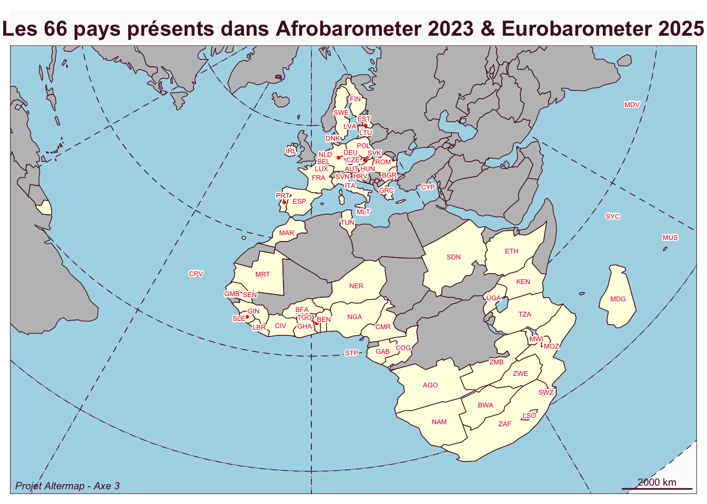
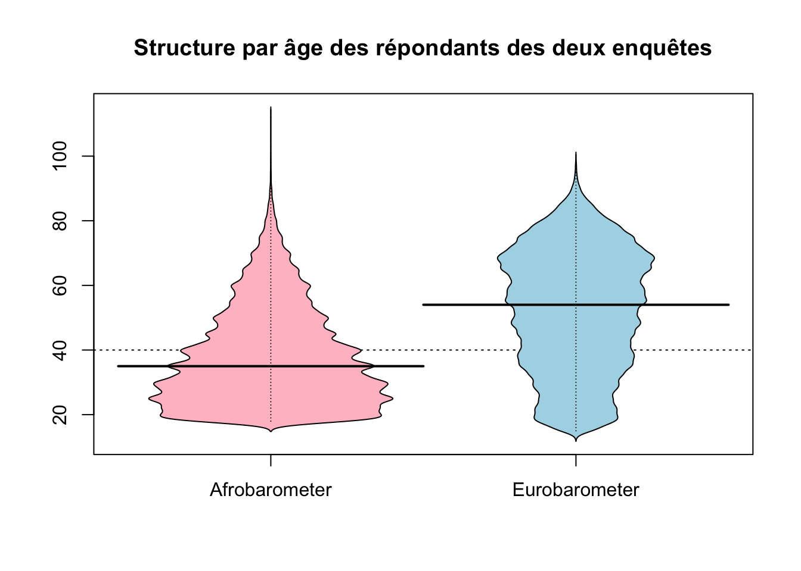
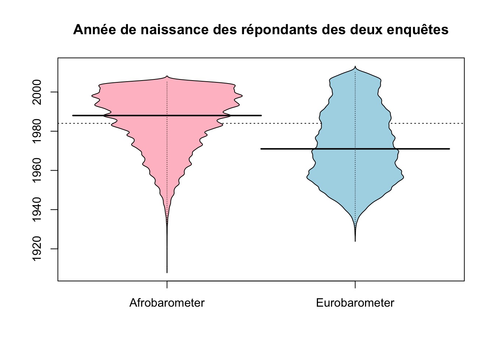

Dans le cadre de l’axe 3 du projet Altermap on se propose de mettre en relation les deux grands questionnaires Eurobarometer & Afrobarometer en ciblant particulièrment les questions relatives au changement climatique et la perception des risques associés.
A. IMPORTATION
A.1 Afrobarometer 2023
Nous avons retenu l’édition la plus récente de données harmonisées entre les différents pays africains de l’Afrobarometer, soit la vague n°9, disponible ici.
On importe l’ensemble du fichier que l’on convertit en factor, puis on construit un dictionnaire des variables en nous servant des labels.
A.2 EuroBarometer 2025
Nous avons retenu l’Eurobarometer SP565 (enquête 103.2), spécialement consacré au changement climatique et , disponible ici.
On importe l’ensemble du fichier que l’on convertit en factor, puis on construit un dictionnaire des variables en nous servant des labels.
B. VARIABLES EXPLICATIVES
On charge les deux fichiers et leurs métadonnées :
B.1 Métadonnées
On va commencer par créer deux fichiers (un pour chaque enquête) ne contenant que les identifiants, la source, l’année et le pondérant, c’est-à-dire les informations de bases qui doivent figurer dans tout fichier. Ces colonnes permettront notamment l’enrichissement futur de la base grâce à l’identification unique.
Métadonnées Afrobarometer 2023
survey
year
id
wgt
Afrobarometer
2023
ANG0001
1.2578534
Afrobarometer
2023
ANG0002
0.6968755
Afrobarometer
2023
ANG0003
0.6968755
Afrobarometer
2023
ANG0004
2.0906264
Afrobarometer
2023
ANG0005
1.3937510
Afrobarometer
2023
ANG0006
1.6771379
Métadonnées Eurobarometer 2023
survey
year
id
wgt
Eurobarometer
2025
150000001
1.419521
Eurobarometer
2025
90000002
0.698007
Eurobarometer
2025
160000003
0.743680
Eurobarometer
2025
350000004
0.771950
Eurobarometer
2025
140000005
0.600188
Eurobarometer
2025
140000006
0.681988
B.2 Localisation
Il s’agit ici d’informations indispensables pour localiser les personnes enquêtées (pays) mais aussi examiner la stratification spatiale (strates) et produire d’éventuelles analyses cartographiques des résultats.
Pays d’enquête
On extrait le nom des pays (en anglais) et on fusionne au passage les deux Allemagnes séparées dans l’enquête EuroBroadMap.
Pays présents dans l’enquête Afrobarometer 2023
Pays
Effectif
1
Angola
1200
2
Benin
1200
3
Botswana
1200
4
Burkina Faso
1200
5
Cabo Verde
1199
6
Cameroon
1200
7
Congo-Brazzaville
1200
8
Côte d’Ivoire
1200
9
Eswatini
1200
10
Ethiopia
2400
11
Gabon
1200
12
Gambia
1200
13
Ghana
2369
14
Guinea
1200
15
Kenya
2400
16
Lesotho
1200
17
Liberia
1200
18
Madagascar
1200
19
Malawi
1200
20
Mali
1200
21
Mauritania
1200
22
Mauritius
1200
23
Morocco
1200
24
Mozambique
1120
25
Namibia
1200
26
Niger
1200
27
Nigeria
1600
28
São Tomé and Príncipe
1200
29
Senegal
1200
30
Seychelles
1176
31
Sierra Leone
1200
32
South Africa
1580
33
Sudan
1200
34
Tanzania
2400
35
Togo
1200
36
Tunisia
1200
37
Uganda
2400
38
Zambia
1200
39
Zimbabwe
1200
Pays présents dans l’enquête Afrobarometer 2023
Pays
Effectif
1
Austria
1008
2
Belgium
1003
3
Bulgaria
1018
4
Croatia
1022
5
Cyprus
499
6
Czech Republic
1005
7
Denmark
1002
8
Estonia
1006
9
Finland
1001
10
France
1002
11
Germany
1509
12
Greece
1003
13
Hungary
1017
14
Ireland
1007
15
Italy
1018
16
Latvia
1008
17
Lithuania
1014
18
Luxembourg
505
19
Malta
503
20
Netherlands
1021
21
Poland
1008
22
Portugal
1053
23
Romania
1038
24
Slovakia
1005
25
Slovenia
1009
26
Spain
1004
27
Sweden
1020
Code ISO3
On transforme les noms de pays en code ISO3 afin de pouvoir ultérieurement visualiser cartographiquement les résultats.
On représente les 66 pays présents dans la réunion des deux enquêtes :
Reading layer `grat30' from data source
`/Users/claudegrasland1/worldregio/altermap/data/Axe2_survey/geom/grat30.geojson'
using driver `GeoJSON'
Simple feature collection with 60 features and 2 fields
Geometry type: POLYGON
Dimension: XY
Bounding box: xmin: -16656040 ymin: -16656040 xmax: 16656040 ymax: 16656040
Projected CRS: North_Pole_Azimuthal_Equidistant

Régions infranationale
Les deux enquêtes indiquent unniveau infranational de découpage qui peut être intéressant pour des analyses plus géographiques même si les effectifs sont faibles. Il faut faire un petit programme dans le cas de l’Eurobaromètre pour fusionner des colonnes …
On peut indiquer à titre d’exemple la ventilation des effectifs d’enquête en France et au Sénégal en comparant le nombre de questionnaire et le poids après redressement. Ceci permet de vérifier su la stratification des enquêtes a bien été faite proportionellement à la population réelle des régions.
Sénégal : Il y a très peu de différence entre les effectifs collectés et le poids réell dans la population.
Effectif d’enquête par régions au Sénégal
Région
Effectif
Poids
DAKAR
312
310.6
DIOURBEL
128
126.6
FATICK
56
60.2
KAFFRINE
48
45.8
KAOLACK
80
82.1
KEDOUGOU
16
12.8
KOLDA
56
54.1
LOUGA
72
76.3
MATAM
48
46.7
SAINT-LOUIS
80
79.9
SEDHIOU
40
37.1
TAMBACOUNDA
56
56.4
THIES
160
161.0
ZIGUINCHOR
48
50.3
France : Il y a des écarts plus importants entre les effectifs d’enquête et le poids en termes de population (ex. 9 enquêtes seulement en pays de Loire pour un poids attendu de 45). Cela s’explique sans doute par le fait que les strates n’ont pas été constituées par régions mais dans une maille plus large telle que les ZEAT. Les régions métropolitaines (Ile de France, Rhône-ALpes, PACA) sont toutes sur-représentées.
Effectif d’enquête par régions en France
Région
Effectif
Poids
FR10 - Ile-de-France
200
189.0
FRB0 - Centre — Val de Loire
24
40.0
FRC1 - Bourgogne
16
25.4
FRC2 - Franche-Comte
28
18.2
FRD1 - Basse-Normandie
16
23.2
FRD2 - Haute-Normandie
24
28.5
FRE1 - Nord-Pas de Calais
60
62.0
FRE2 - Picardie
47
29.1
FRF1 - Alsace
39
30.1
FRF2 - Champagne-Ardenne
28
20.2
FRF3 - Lorraine
28
36.2
FRG0 - Pays de la Loire
9
45.0
FRH0 - Bretagne
71
53.9
FRI1 - Aquitaine
62
56.7
FRI2 - Limousin
8
11.6
FRI3 - Poitou-Charentes
16
29.1
FRJ1 - Languedoc-Roussillon
23
46.5
FRJ2 - Midi-Pyrenees
43
50.0
FRK1 - Auvergne
24
21.6
FRK2 - Rhone-Alpes
146
104.1
FRL0 - Provence-Alpes-Cote d’Azur
90
81.7
Urbain-rural
Les deux enquêtes proposent une typologie en trois modalités comme on peut le voir dans les tableau ci-dessous :
Typologie Urbain-Rural dans Afrobarometer 2023
modalités
effectif
Urban
24772
Rural
27984
Peri-urban
688
Typologie Urbain-Rural dans Eurobarometer 2025
modalités
effectif
Cities/urban
10553
Towns/suburbs
8550
Rural
7205
On décide d’harmoniser en isolant le rural vis à vis des autres modalités urbaine et semi-urbaine que l’on regroupe. On aboutit à un tableau a priori conforme à l’intuition que l’urbanisation est plus importante dans les pays européens que dans les pays africains, ce qui ne serait pas le cas si on avait regroupé la catégorie intermédiaire avec le rural.
Variable urbain-rural harmonisée
Caractéristique
Rural N = 351891
Urban N = 445631
p-valeur2
survey
<0,001
Afrobarometer
27984 (52%)
25460 (48%)
Eurobarometer
7205 (27%)
19103 (73%)
1 n (%)
2 test du khi-deux d’indépendance
B.3 Individus
Sexe/Genre
l’Afromarometer 2023 emploie le concept de sexe (en deux modalités) tandis que l’Eurobarometer 2025 semble employer le concept de genre (en trois modalités). Toutefois l’analyse des deux tableaux montre que l’EuroBarometer est probablement hypocrite dans la mesure où les cas non binaires sont très peu nombreux et surtout mélangés avec les non réponses donc impossible à identifier
Variablesexedans Afrobarometer 2023
modalités
effectif
Man
26706
Woman
26738
Variablegenredans Eurobarometer 2025
modalités
effectif
Man
12372
Woman
13902
None of the above/ Non binary/ do not recognize yourself in above categories/Prefer not to say
34
On décide donc de passer en non réponses les 34 cas de l’Eurobarometre et d’appeler la variable harmonisée sexe :
Caractéristique
Man N = 390781
Woman N = 406401
p-valeur2
survey
<0,001
Afrobarometer
26706 (50%)
26738 (50%)
Eurobarometer
12372 (47%)
13902 (53%)
1 n (%)
2 test du khi-deux d’indépendance
Âge
Cette variable est à manipuler avec précaution dans R car c’est au départ un factor. Et si on convertit en numérique sans passer par le mode caractère il peut arriver qu’un individu de 19 ans (2e modalité) se retouve âge de … 2 ans ! Il faut faire attention également aux valeurs extrêmes type “-de 15 ans” et “plus de 100 ans”. Mais au prix de ces précautions on obtient une variable quantitative donnant l’axe des individus.
Nous ne discutions pas immédiatement du problème du choix des classes d’âge mais il convient de souligner tout de suite l’importance différentede structure par âge des deux échantillons. L’âge médian est en effet de 35 ans pour l’échantillon de l’Afrobarometer 2023 contre 54 ans pour celui de l’Eurobarometer 2025. Il faudra donc bien réfléchir à ce que l’on entend par “Jeunes”, “Adultes” ou “Vieux” dans chacun des deux contextes ..

Génération
La génération, entendue comme l’année de naissance est une variable fondamentale pour l’analyse et l’interprétation des résultats. Elle se déduit approximativement de l’âge par soustraction, faute de disposer d’une information plus précise dans les deux questionnaires. On tient évidemment compte du décalage de deux ans entre les deux enquêtes.
Min. 1st Qu. Median Mean 3rd Qu. Max. NA's
1911 1975 1988 1985 1997 2005 60
Min. 1st Qu. Median Mean 3rd Qu. Max.
1927 1958 1971 1973 1988 2010
L’analyse des valeurs médianes nous indique que dans l’échantillon Afrobarometer, 50% des personnes interrogées sont nées après 1985 tandis que dans l’échantillon EuroBarometer 50% sont nées après 1971, soit un décalage de 14 ans.

On ajoute une partitition en 5 classes (gen5) élaborée par les travaux des sociologues Strauss et Howe. Cette typologie est a priori surtout valable dans le monde occidental et sans doute davantage journalistique que scientifique. Mais elle recoupe par certains aspects l’histoire coloniale de l’Afrique.
Silent (< 1946)
Baby Boomers (1946-1964) _ 3. Generation X (1965-1980)
Generation Y ou ‘Millenials’ (1981-1996)
Generation Z (1997-2012)
Caractéristique
Afrobarometer N = 534441
Eurobarometer N = 263081
p-valeur2
gen5
<0,001
1. Ancient (1910-1945)
628 (1,2%)
1376 (5,2%)
2. Boomers (1946-1964)
6281 (12%)
8907 (34%)
3. Gen. X (1965-1980)
11820 (22%)
7082 (27%)
4. Gen. Y (1981-1996)
21706 (41%)
5690 (22%)
5. Gen. Z (1997-2012)
12949 (24%)
3253 (12%)
Manquant
60
0
1 n (%)
2 test du khi-deux d’indépendance
Il apparaît en tous les cas très clairement une très forte différence de répartition entre les deux échantillons. Et si on admet que le étudiants universitaires qui seront ciblés par les travaux d’Altermap se situent plutôt dans la génération Z, alors on voit que l’échantillon sera potentiellement plus important en Afrique qu’en Europe, même si cela est à nuancer par le niveau d’étude …
Niveau d’éducation
Les choses se corsent un peu avec le niveau d’éducation mais l’harmonisation est possible car les catégories sont détaillées dans chacune des enquêtes :
Informal schooling only (including Koranic schooling)
2038
Some primary schooling
7801
Primary school completed
7341
Intermediate school or Some secondary school / high school
10612
Secondary school / high school completed
8764
Post-secondary qualifications, other than university e.g. a diploma or degree from a polytechnic or college
3131
Some university
2400
University completed
3123
Post-graduate
533
Refused
90
Don’t know
51
Variableniveau d’étude (d9a) dans Eurobarometer 2025
modalités
effectif
Pre-primary education (include no education)
158
Primary education
1243
Lower secondary education
4228
Upper secondary education
9651
Post-secondary non tertiary (including pre-vocational or vocational education)
2131
Short-cycle tertiary
1876
Bachelor or equivalent
3473
Master or equivalent
3209
Doctoral or equivalent
309
Education up to ISCED 4 completed abroad
0
Education ISCED 5 and above completed abroad
0
Refusal (SPONTANEOUS)
19
Don’t know (SPONTANEOUS)
11
On propose de se ramener à quatre paliers correspondant classiquement aux différents cycles
0 : aucune scolarisation ou informelle
1 : scolarisation primaire
2 : scolarisation secondaire
3 : scolarisation supérieure
Variable niveau d’étude harmonisée
Caractéristique
0. None/Informal N = 97561
1. Primary N = 163851
2. Secondary N = 353861
3. Superior N = 180541
p-valeur2
survey
<0,001
Afrobarometer
9598 (18%)
15142 (28%)
19376 (36%)
9187 (17%)
Eurobarometer
158 (0,6%)
1243 (4,7%)
16010 (61%)
8867 (34%)
1 n (%)
2 test du khi-deux d’indépendance
étudiant
Plutôt que de chercher à harmoniser la variable occupation dans les deux enquêtes, nous limiterons notre harmonisation au repérage des personnes qui se sont déclarées “etudiant.e” afin d’avoir une idée de l’effectif disponible dans l’ensemble des deux enquêtes :
Caractéristique
No N = 733461
Yes N = 64061
p-valeur2
survey
<0,001
Afrobarometer
48875 (91%)
4569 (8,5%)
Eurobarometer
24471 (93%)
1837 (7,0%)
1 n (%)
2 test du khi-deux d’indépendance
Comme on peut le voir l’effectif est très faible mais relativement comparable dans les deux enquêtes: de l’ordre de 7 à 9% des personnes interrogées déclarent un statut d’étudiant.
Nous effectuons un zoom sur la France et le Sénegal pour avoir une idée plus précise de la base dont nous disposerons pour comparer ensuite à nos propres enquêtes à UPC et l’UCAD.
Caractéristique
No N = 20081
Yes N = 1941
p-valeur2
country
0,5
France
918 (92%)
84 (8,4%)
Senegal
1090 (91%)
110 (9,2%)
1 n (%)
2 test du khi-deux d’indépendance
Nous disposerons donc dans chaque pays d’un petit échantillon de référence d’environ 100 personnes (soit 8 à 9% des personnes enquêtées) qu’on pourra comparer à nos résultats d’enquête.
C. VARIABLES A EXPLIQUER
On part du document de comparaison établi par Malika Madelin et on essaye de créer quelques variables conjointes aux deux enquêtes tout en gardant la trace des variables propres à chaque enquête dans leur forme originale.
C.1 Connaissance
Les personnes intrrogées ont-elles entendu parler du changement climatque. Cette question n’est disponible que dans l’Afrobarometer (Q64 : Have you heard about climate change, or haven’t you had the chance to hear about this yet?) mais est sans équivalent dans l’Eurobaromètre ce qui est dommage. Et ce qui est sans doute révélateur d’une forme de sentiment de supériorité des enquêteurs européens qui postulent qu le sujet est évident et connu de tous les citoyens de leur continent…
-Connaisances du changement climatique (Afrobarometer)
modalités
effectif
Missing
0
No
25261
Yes
26735
Refused to Answer
32
Don’t Know
1416
Comme on peut le constater, près de la moitié des personnes interrogées par Afrobarometer déclarent ne pas connaître le sujet deu changement climatique. Et logiquement, on ne les interrogera pas ensuite sur les effets du changement climatque dans la question suivante, ce qui est cohérent.
L’information étant manquant dans l’Eurobarometer on crée juste un champ vide …
C.2 Impact
On cherche à mesurer dans quelle mesure les citoyens (informés …) évaluent l’impact du changement climatique sur une échelle allant du négatif (impact fort, dommages conséquents, …) au positive (impact faibles ou nuls, bénéfices éventuels, …). Il s’agit évidemment d’une formulation imprécise où l’harmonisation est rendue délicate par les différences de formulation dans les deux questionnaires.
Afrobarometer
La variable qui semble la plus adaptée pour mesuer l’impact est Q67B : Do you think climate change is making life in [your country] better or worse, or haven’t you heard enough to say?. Pont important, elle n’est posée que si les personnes ont répondu positivement à la question précédente sur la connaissance du phénomène. Cela réduit donc l’effectif de réponse de moitié puisque toutes les personnes qui ont déclaré ne pas connaîitre le changement climatique ont été exclues et n’ont pas répondu ce qui donnela modalité “Not Applicable” à ne pas confondre avec les refus de répondre ou les déclarations d’ignorance.
-Impact du changement climatique dans l’Afrobarometer (variable brute)
modalités
effectif
Missing
0
Much better
1390
Somewhat better
3360
Neither/ no change / about the same
1934
Somewhat worse
8992
Much worse
10213
Not Applicable
26709
Refused
13
Don’t know / Haven’t heard enough to say
833
Si on élimine les non réponses et les personnes non interrogées, on aboutit à une variable se présentant comme une échelle de Likert à 5 paliers
-Impact du changement climatique dans l’Afrobarometer (échelle de Likert à 5 paliers)
modalités
effectif
Missing
0
Much better
1390
Somewhat better
3360
Neither/ no change / about the same
1934
Somewhat worse
8992
Much worse
10213
Not Applicable
26709
Refused
13
Don’t know / Haven’t heard enough to say
833
Eurobarometer
la variable la plus proches est QD2. Dans quelle mesure pensez-vous que le changement climatique est un problème grave en ce moment ? ce qui est légèrement différent mais tout de même comparable. Même si on est en présence d’une échelle de Liket à quatre paliers qui exclue les réponses intermédiaires ou neutres.
-Impact du changement climatique dans l’Eurobarometer (échelle de Likert à 4 paliers)
modalités
effectif
A very serious problem
10153
A fairly serious problem
11903
Not a very serious problem
3266
Not a serious problem at all
673
Don’t know (SPONTANEOUS)
313
Harmonisation
En retirant le palier central de l’Eurobarometer, on peut construire une échelle à quatre paliers commune aux deux enquêtes. Comme les libllés sont différents, on adopte une description plus abstraite qui ne reprenne aucune des deux précédentes.
-Impact du changement climatique harmonisé (échelle de Likert à 4 paliers)
Caractéristique
1. Very negative N = 203661
2. Negative N = 208951
3. Positive N = 66261
4.Very Positive N = 20631
p-valeur2
survey
<0,001
Afrobarometer
10213 (43%)
8992 (38%)
3360 (14%)
1390 (5,8%)
Eurobarometer
10153 (39%)
11903 (46%)
3266 (13%)
673 (2,6%)
1 n (%)
2 test du khi-deux d’indépendance
C.3 Evolution
Dans le questionnaire Afrobarometer, on dispose d’une information plus précise sur l’évolution de phénomènes climatique en ciblant des événements précis et la perception de leur évolution depuis 10 ans (soit 2013-2023). Ces données ne sont malheureusement pas disponibles dans le questionnaire Eurobarometer
Sécheresses
On va utiliser ici la question Q66A formulée ainsi “In your experience, over the past 10 years, has there been any change in the severity of the following events in the area where you live? Have they become more severe, less severe, or stayed about the same: drought?”. Comme on peut le voir la question ne supposait pas une connaissance du changement climatique et a pu être posée à l’ensemble de l’échantillon. Elle se présente comme une échelle de Likert à 5 paliers
-Evolution de l’impact des sécheresses
modalités
effectif
Missing
0
Much more severe
14439
Somewhat more severe
10475
Stayed the same
10884
Somewhat less severe
7896
Much less severe
7810
Refused
44
Don’t know
1896
Not asked in the country
0
On aligne les réponses sur une échelle allant du plus négatif (1) au plus positif (5)
Caractéristique
N = 534441
clim_evol_drought
1. Much less severe
7810 (15%)
2. Somewhat less severe
7896 (15%)
3. Stayed the same
10884 (21%)
4. Somewhat more severe
10475 (20%)
5. Much more severe
14439 (28%)
Manquant
1940
1 n (%)
Inondations
On va utiliser ici la question Q66B formulée ainsi “In your experience, over the past 10 years, has there been any change in the severity of the following events in the area where you live? Have they become more severe, less severe, or stayed about the same: flooding?”. Comme on peut le voir la question ne supposait pas une connaissance du changement climatique et a pu être posée à l’ensemble de l’échantillon. Elle se présente comme une échelle de Likert à 5 paliers
-Responsabilité du changement climatique dans l’Afrobarometer
modalités
effectif
Missing
0
Much more severe
14439
Somewhat more severe
10475
Stayed the same
10884
Somewhat less severe
7896
Much less severe
7810
Refused
44
Don’t know
1896
Not asked in the country
0
On aligne les réponses sur une échelle allant du plus négatif (1) au plus positif (5)
Caractéristique
N = 534441
clim_evol_flooding
1.Much less severe
7810 (15%)
2. Somewhat less severe
7896 (15%)
3. Stayed the same
10884 (21%)
4. Somewhat more severe
10475 (20%)
5. Much more severe
14439 (28%)
Manquant
1940
1 n (%)
C.4 Responsabilité
Cette variable est disponible dans l’Eurobarometer 2025 mais pas dans la compilation harmonisée de l’Afrobarometer 2023. Elle pourrait néanmoins être trouvée dans des éditions antérieures ou spécifique à des pays. Les personnes interrogées dans l’Eurobarometer ont-répondu à la question suivante (SD1 : To what extent do you agree with the following statement on climate change? Climate change is caused by human activity).
modalités
effectif
Totally agree
10294
Tend to agree
11745
Tend to disagree
2817
Totally disagree
972
Don’t know (SPONTANEOUS)
480
On la recode comme échelle de Likert à 4 paliers en partant des personnes en total désaccord (1) pour aller aux personnes en total accord (4)
Caractéristique
N = 263081
clim_resp
1. Totally disagree
972 (3,8%)
2. Tend to disagree
2817 (11%)
3.Tend to agree
11745 (45%)
4. Totally agree
10294 (40%)
Manquant
480
1 n (%)
C.5 Action
Cette variable est posée presque dans les mêmes termes dans les deux enquêtes et on peut raisonnablement proposer une harmonisation.
Afrobarometer
Cette variable est conditionné par le fait que les personnes enquêtées savent ce qu’est le changement climatique ce qui réduit automatiquement l’échantillon de moitié. Elle est formulée ainsi : “Q70C : Should the government of your country need to do more to fight climate change”
modalités
effectif
Missing
0
Doing enough
1516
Need to do somewhat more
4173
Need to do a lot more
20445
Not applicable
26709
Refused
27
Don’t know
574
On recode sur une échelle de Likert numérotée de 1 à 3
Caractéristique
N = 534441
Q70c. Do more to fight climate change: government
1. Doing enough
1516 (5,8%)
2. Need to do somewhat more
4173 (16%)
3. Need to do a lot more
20445 (78%)
Manquant
27310
1 n (%)
Afrobarometer
Cette variable est conditionné par le fait que les personnes enquêtées savent ce qu’est le changement climatique ce qui réduit automatiquement l’échantillon de moitié. Elle est formulée ainsi : “Q70C : Should the government of your country need to do more to fight climate change”
modalités
effectif
Enough
6457
Not enough
16746
Too much
1599
Don’t know (SPONTANEOUS)
1506
On recode sur une échelle de Likert numérotée de 1 à 3
On décide d’harmoniser en niveau 1, 2, 3, indépendamment du texte car on fait l’hypothèse que les personnes se situent sur l’échelle plutôt que sur les mots
[1] "1. Too much" "2. Enough" "3. Not enough"
Caractéristique
1. Low N = 31151
2. Medium N = 106301
3. High N = 371911
p-valeur2
survey
<0,001
Afrobarometer
1516 (5,8%)
4173 (16%)
20445 (78%)
Eurobarometer
1599 (6,4%)
6457 (26%)
16746 (68%)
1 n (%)
2 test du khi-deux d’indépendance
N.B. Cette harmonisation est évidemment discutable …
C.6 Autres
Nous procéderons ultérieurement à d’autres essais d’harmonisation, mais on souhaite déjà tester les possibilités d’analyse de la variable clim_impact harmonisée.
D. ASSEMBLAGE
D.1 Recodage
On assemble les deux bases et on procède à quelques ajustements des formats de variables. On leur ajoute des labels pour une utilisation plus facile du tableau et on précide lorsque cela est nécessaire la source précise (n° de question).
Aperçu du tableau de données harmonisé
survey
year
id
wgt
country
iso3
region
urbrur
sex
age
gen
gen5
edu_abm
edu_ebm
edu
stu
clim_know
clim_impact_abm
clim_impact_ebm
clim_impact
clim_evol_drought
clim_evol_flooding
clim_resp
clim_action_abm
clim_action_ebm
clim_action
Afrobarometer
2023
ANG0001
1.2578534
Angola
AGO
Luanda
Urban
Woman
39
1984
4. Gen. Y (1981-1996)
Intermediate school or Some secondary school / high school
NA
2. Secondary
No
Yes
2.Somewhat worse
NA
2. Negative
3. Stayed the same
3. Stayed the same
NA
2. Need to do somewhat more
NA
2. Medium
Afrobarometer
2023
ANG0002
0.6968755
Angola
AGO
Uíge
Urban
Woman
24
1999
5. Gen. Z (1997-2012)
Some university
NA
3. Superior
Yes
Yes
5.Much better
NA
4.Very Positive
4. Somewhat more severe
4. Somewhat more severe
NA
2. Need to do somewhat more
NA
2. Medium
Afrobarometer
2023
ANG0003
0.6968755
Angola
AGO
Uíge
Urban
Woman
29
1994
4. Gen. Y (1981-1996)
Secondary school / high school completed
NA
2. Secondary
No
No
NA
NA
NA
5. Much more severe
5. Much more severe
NA
NA
NA
NA
Afrobarometer
2023
ANG0004
2.0906264
Angola
AGO
Uíge
Urban
Man
19
2004
5. Gen. Z (1997-2012)
Primary school completed
NA
1. Primary
Yes
Yes
NA
NA
NA
2. Somewhat less severe
2. Somewhat less severe
NA
3. Need to do a lot more
NA
3. High
Afrobarometer
2023
ANG0005
1.3937510
Angola
AGO
Uíge
Urban
Man
28
1995
4. Gen. Y (1981-1996)
Intermediate school or Some secondary school / high school
NA
2. Secondary
No
Yes
1.Much worse
NA
1. Very negative
3. Stayed the same
3. Stayed the same
NA
3. Need to do a lot more
NA
3. High
Afrobarometer
2023
ANG0006
1.6771379
Angola
AGO
Luanda
Urban
Man
18
2005
5. Gen. Z (1997-2012)
Intermediate school or Some secondary school / high school
NA
2. Secondary
No
Yes
1.Much worse
NA
1. Very negative
NA
NA
NA
3. Need to do a lot more
NA
3. High
Le tableau final comporte 79752 observations et 27 variables. Certaines variables comportent trois colonnes lorsque l’on estime que l’harmonisation a fait perdre de l’information et qu’on préfère garder les deux variables initiales propre à chaque enquête.
D.2 Métadonnées
On créer un fichier de métadonnées sur le libellé des variables que l’on sauvegarde.
Liste des variables de la base de données harmonisée.
variable
definition
survey
Organism in charge of survey
year
Year of survey
id
Unique identificator
wgt
Weight
country
Country name
iso3
Country ISO3 code
region
Infranational location
urbrur
Rural/Urban typology
sex
Sex
age
Age
gen
Generation (year of birth)
gen5
Generation in Strauss-Howe 5 groups
edu_abm
Level of education (ABM)
edu_ebm
Level of education (EBM)
edu
Level of education (harmonised)
stu
Declare ‘student’ as activity
clim_know
Knowledge about climate change (ABM)
clim_impact_abm
Impact of climate change (ABM)
clim_impact_ebm
Impact of climate change (EBM)
clim_impact
Impact of climate change (harmonised)
clim_evol_drought
Evolution of droughts (ABM)
clim_evol_flooding
Evolution of floodings (ABM)
clim_resp
Human responsability in climate change (EBM)
clim_action_abm
Action du gouvernemtn (ABM)
clim_action_ebm
Action du gouvernement (EBM)
clim_action
Action du gouvernement (harmonised)
E. RESUMES PAR PAYS
On procède à quelques analyses rapides sur les deux variables harmonisées relatives au changement climatique. On effectue dans les calculs avec pondération pour redresser les échantillons. On utilise les packages survey et gt_summary pour produire des tableaux de qualité
E.1 Connaissance
Rappelons que cette question Q67A n’est disponible que dans l’Afrobarometer et est libellée ainsi Have you heard about climate change, or haven’t you had the chance to hear about this yet?
Caractéristique
No N = 251531
Yes N = 268701
p-valeur2
Country name
<0,001
Angola
590 (52%)
550 (48%)
Benin
514 (43%)
680 (57%)
Botswana
776 (69%)
349 (31%)
Burkina Faso
607 (51%)
587 (49%)
Cabo Verde
395 (33%)
794 (67%)
Cameroon
450 (38%)
747 (62%)
Congo-Brazzaville
565 (47%)
632 (53%)
Côte d'Ivoire
674 (56%)
525 (44%)
Eswatini
558 (47%)
637 (53%)
Ethiopia
1255 (53%)
1128 (47%)
Gabon
363 (30%)
837 (70%)
Gambia
411 (38%)
669 (62%)
Ghana
1245 (54%)
1051 (46%)
Guinea
517 (43%)
682 (57%)
Kenya
1070 (46%)
1263 (54%)
Lesotho
730 (63%)
431 (37%)
Liberia
467 (39%)
727 (61%)
Madagascar
369 (31%)
823 (69%)
Malawi
287 (24%)
889 (76%)
Mali
485 (41%)
708 (59%)
Mauritania
804 (68%)
382 (32%)
Mauritius
277 (24%)
876 (76%)
Morocco
520 (44%)
651 (56%)
Mozambique
674 (62%)
409 (38%)
Namibia
630 (54%)
543 (46%)
Niger
503 (42%)
693 (58%)
Nigeria
1080 (69%)
477 (31%)
São Tomé and Príncipe
494 (42%)
688 (58%)
Senegal
611 (51%)
576 (49%)
Seychelles
200 (17%)
946 (83%)
Sierra Leone
552 (49%)
584 (51%)
South Africa
810 (55%)
675 (45%)
Sudan
522 (44%)
653 (56%)
Tanzania
1504 (66%)
773 (34%)
Togo
632 (53%)
562 (47%)
Tunisia
817 (75%)
269 (25%)
Uganda
1023 (43%)
1345 (57%)
Zambia
535 (51%)
523 (49%)
Zimbabwe
636 (54%)
539 (46%)
1 n (%)
2 Pearson’s X^2: Rao & Scott adjustment
E.2 Impact
On utilise la variable harmonisée qui correspond à une échelle de Likert à quatre paliers renvoyant à des définitions légèrement différentes dans les deux enquêtes.
Caractéristique
1. Very negative N = 203511
2. Negative N = 208701
3. Positive N = 66491
4.Very Positive N = 21381
p-valeur2
Country name
<0,001
Angola
166 (37%)
142 (31%)
98 (22%)
47 (10%)
Austria
252 (25%)
496 (50%)
184 (19%)
59 (5,9%)
Belgium
401 (40%)
437 (44%)
128 (13%)
32 (3,2%)
Benin
289 (43%)
289 (43%)
80 (12%)
14 (2,1%)
Botswana
123 (45%)
111 (40%)
35 (13%)
6 (2,3%)
Bulgaria
415 (41%)
468 (47%)
102 (10%)
18 (1,8%)
Burkina Faso
152 (27%)
262 (47%)
106 (19%)
40 (7,2%)
Cabo Verde
366 (52%)
274 (39%)
35 (5,0%)
22 (3,2%)
Cameroon
214 (30%)
362 (51%)
99 (14%)
32 (4,6%)
Congo-Brazzaville
154 (25%)
361 (58%)
70 (11%)
35 (5,6%)
Côte d'Ivoire
147 (30%)
232 (47%)
80 (16%)
30 (6,0%)
Croatia
344 (34%)
524 (52%)
124 (12%)
24 (2,4%)
Cyprus
271 (55%)
176 (36%)
35 (7,2%)
10 (2,0%)
Czech Republic
209 (22%)
467 (48%)
245 (25%)
47 (4,8%)
Denmark
492 (50%)
417 (42%)
69 (7,0%)
7 (0,7%)
Estonia
149 (15%)
450 (46%)
283 (29%)
99 (10%)
Eswatini
289 (50%)
212 (36%)
53 (9,1%)
28 (4,8%)
Ethiopia
209 (20%)
299 (29%)
353 (34%)
181 (17%)
Finland
499 (50%)
367 (37%)
96 (9,7%)
32 (3,2%)
France
503 (51%)
423 (43%)
60 (6,0%)
9 (0,9%)
Gabon
182 (25%)
458 (62%)
78 (11%)
23 (3,0%)
Gambia
367 (60%)
171 (28%)
49 (8,0%)
28 (4,5%)
Germany
493 (33%)
745 (51%)
205 (14%)
31 (2,1%)
Ghana
254 (32%)
379 (48%)
126 (16%)
36 (4,5%)
Greece
392 (39%)
505 (50%)
81 (8,1%)
24 (2,4%)
Guinea
314 (48%)
240 (36%)
86 (13%)
20 (3,1%)
Hungary
417 (41%)
521 (51%)
72 (7,1%)
4 (0,4%)
Ireland
457 (46%)
426 (43%)
78 (7,8%)
39 (3,9%)
Italy
366 (36%)
515 (51%)
108 (11%)
27 (2,7%)
Kenya
640 (54%)
410 (34%)
108 (9,0%)
33 (2,8%)
Latvia
309 (31%)
471 (48%)
166 (17%)
40 (4,0%)
Lesotho
292 (69%)
89 (21%)
15 (3,4%)
27 (6,3%)
Liberia
336 (48%)
160 (23%)
104 (15%)
95 (14%)
Lithuania
342 (34%)
494 (50%)
135 (14%)
22 (2,2%)
Luxembourg
286 (57%)
178 (35%)
28 (5,6%)
10 (1,9%)
Madagascar
583 (73%)
169 (21%)
27 (3,3%)
21 (2,6%)
Malawi
641 (76%)
121 (14%)
33 (3,9%)
46 (5,5%)
Mali
333 (49%)
231 (34%)
89 (13%)
32 (4,6%)
Malta
300 (60%)
147 (29%)
44 (8,9%)
9 (1,9%)
Mauritania
21 (6,1%)
124 (36%)
163 (47%)
39 (11%)
Mauritius
274 (34%)
482 (60%)
40 (5,0%)
2 (0,2%)
Morocco
185 (32%)
227 (39%)
132 (23%)
35 (6,0%)
Mozambique
90 (25%)
103 (29%)
118 (33%)
46 (13%)
Namibia
122 (28%)
146 (34%)
128 (29%)
39 (9,0%)
Netherlands
528 (52%)
331 (33%)
128 (13%)
25 (2,5%)
Niger
337 (50%)
203 (30%)
63 (9,3%)
75 (11%)
Nigeria
125 (33%)
189 (50%)
63 (16%)
6 (1,5%)
Poland
148 (15%)
652 (65%)
176 (18%)
23 (2,3%)
Portugal
511 (49%)
442 (42%)
83 (8,0%)
8 (0,8%)
Romania
189 (19%)
489 (48%)
295 (29%)
44 (4,3%)
São Tomé and Príncipe
246 (44%)
148 (26%)
100 (18%)
67 (12%)
Senegal
165 (31%)
241 (45%)
102 (19%)
28 (5,2%)
Seychelles
144 (25%)
369 (63%)
55 (9,4%)
19 (3,2%)
Sierra Leone
170 (32%)
223 (43%)
81 (16%)
49 (9,3%)
Slovakia
338 (34%)
511 (51%)
117 (12%)
29 (2,9%)
Slovenia
492 (49%)
401 (40%)
92 (9,2%)
20 (2,0%)
South Africa
197 (40%)
178 (37%)
76 (16%)
38 (7,8%)
Spain
335 (34%)
550 (56%)
87 (8,9%)
14 (1,4%)
Sudan
105 (19%)
162 (29%)
175 (32%)
110 (20%)
Sweden
684 (67%)
253 (25%)
69 (6,8%)
10 (1,0%)
Tanzania
390 (55%)
235 (33%)
76 (11%)
11 (1,6%)
Togo
196 (37%)
215 (41%)
96 (18%)
22 (4,2%)
Tunisia
160 (65%)
65 (26%)
12 (4,9%)
11 (4,3%)
Uganda
725 (58%)
407 (32%)
106 (8,5%)
18 (1,4%)
Zambia
263 (56%)
164 (35%)
30 (6,5%)
14 (2,9%)
Zimbabwe
269 (60%)
161 (36%)
16 (3,7%)
2 (0,4%)
1 n (%)
2 Pearson’s X^2: Rao & Scott adjustment
E.3.1 Evolution des sécheresses
Caractéristique
1. Much less severe N = 78701
2. Somewhat less severe N = 79291
3. Stayed the same N = 108761
4. Somewhat more severe N = 103531
5. Much more severe N = 144801
p-valeur2
Country name
<0,001
Angola
176 (17%)
157 (15%)
144 (14%)
211 (21%)
330 (32%)
Benin
71 (5,9%)
247 (21%)
216 (18%)
362 (30%)
304 (25%)
Botswana
90 (7,8%)
172 (15%)
344 (30%)
284 (25%)
259 (23%)
Burkina Faso
145 (12%)
249 (21%)
185 (16%)
340 (29%)
262 (22%)
Cabo Verde
63 (5,4%)
68 (5,8%)
87 (7,4%)
214 (18%)
741 (63%)
Cameroon
102 (8,6%)
206 (17%)
302 (25%)
320 (27%)
257 (22%)
Congo-Brazzaville
139 (12%)
169 (14%)
485 (41%)
196 (16%)
205 (17%)
Côte d'Ivoire
183 (15%)
269 (22%)
303 (25%)
226 (19%)
213 (18%)
Eswatini
146 (13%)
220 (19%)
239 (21%)
236 (20%)
322 (28%)
Ethiopia
572 (24%)
586 (25%)
294 (13%)
535 (23%)
354 (15%)
Gabon
119 (10%)
177 (15%)
622 (54%)
157 (14%)
74 (6,4%)
Gambia
470 (43%)
107 (9,7%)
155 (14%)
106 (9,7%)
261 (24%)
Ghana
702 (31%)
311 (14%)
652 (29%)
293 (13%)
322 (14%)
Guinea
177 (15%)
201 (17%)
180 (15%)
262 (22%)
378 (32%)
Kenya
281 (12%)
410 (18%)
470 (20%)
378 (16%)
803 (34%)
Lesotho
225 (19%)
287 (25%)
111 (9,5%)
111 (9,5%)
428 (37%)
Liberia
311 (29%)
102 (9,4%)
230 (21%)
199 (18%)
243 (22%)
Madagascar
28 (2,3%)
42 (3,5%)
97 (8,1%)
228 (19%)
799 (67%)
Malawi
146 (12%)
175 (15%)
201 (17%)
182 (15%)
482 (41%)
Mali
121 (10%)
222 (19%)
96 (8,1%)
256 (22%)
490 (41%)
Mauritania
55 (4,7%)
153 (13%)
264 (22%)
295 (25%)
424 (36%)
Mauritius
124 (11%)
200 (17%)
420 (36%)
262 (22%)
174 (15%)
Morocco
54 (4,5%)
100 (8,4%)
245 (21%)
325 (27%)
469 (39%)
Mozambique
160 (15%)
153 (14%)
267 (25%)
207 (19%)
283 (26%)
Namibia
178 (16%)
160 (14%)
308 (28%)
185 (17%)
288 (26%)
Niger
91 (7,6%)
138 (12%)
89 (7,5%)
304 (25%)
572 (48%)
Nigeria
552 (36%)
265 (17%)
302 (20%)
281 (18%)
119 (7,9%)
São Tomé and Príncipe
228 (21%)
194 (18%)
232 (22%)
211 (20%)
211 (20%)
Senegal
165 (14%)
188 (16%)
287 (25%)
251 (22%)
267 (23%)
Seychelles
178 (16%)
113 (10%)
360 (32%)
327 (29%)
134 (12%)
Sierra Leone
646 (56%)
132 (11%)
206 (18%)
102 (8,8%)
77 (6,6%)
South Africa
290 (22%)
159 (12%)
459 (34%)
168 (13%)
256 (19%)
Sudan
71 (6,1%)
383 (33%)
249 (21%)
297 (25%)
172 (15%)
Tanzania
233 (9,9%)
299 (13%)
499 (21%)
554 (24%)
769 (33%)
Togo
66 (5,5%)
192 (16%)
205 (17%)
308 (26%)
424 (35%)
Tunisia
28 (2,4%)
71 (6,1%)
229 (20%)
236 (20%)
596 (51%)
Uganda
182 (7,8%)
317 (14%)
479 (20%)
481 (21%)
880 (38%)
Zambia
182 (16%)
191 (17%)
181 (16%)
245 (22%)
339 (30%)
Zimbabwe
119 (10%)
148 (13%)
180 (15%)
218 (19%)
500 (43%)
1 n (%)
2 Pearson’s X^2: Rao & Scott adjustment
E.3.2 Evolution des inondations
Caractéristique
1.Much less severe N = 78701
2. Somewhat less severe N = 79291
3. Stayed the same N = 108761
4. Somewhat more severe N = 103531
5. Much more severe N = 144801
p-valeur2
Country name
<0,001
Angola
176 (17%)
157 (15%)
144 (14%)
211 (21%)
330 (32%)
Benin
71 (5,9%)
247 (21%)
216 (18%)
362 (30%)
304 (25%)
Botswana
90 (7,8%)
172 (15%)
344 (30%)
284 (25%)
259 (23%)
Burkina Faso
145 (12%)
249 (21%)
185 (16%)
340 (29%)
262 (22%)
Cabo Verde
63 (5,4%)
68 (5,8%)
87 (7,4%)
214 (18%)
741 (63%)
Cameroon
102 (8,6%)
206 (17%)
302 (25%)
320 (27%)
257 (22%)
Congo-Brazzaville
139 (12%)
169 (14%)
485 (41%)
196 (16%)
205 (17%)
Côte d'Ivoire
183 (15%)
269 (22%)
303 (25%)
226 (19%)
213 (18%)
Eswatini
146 (13%)
220 (19%)
239 (21%)
236 (20%)
322 (28%)
Ethiopia
572 (24%)
586 (25%)
294 (13%)
535 (23%)
354 (15%)
Gabon
119 (10%)
177 (15%)
622 (54%)
157 (14%)
74 (6,4%)
Gambia
470 (43%)
107 (9,7%)
155 (14%)
106 (9,7%)
261 (24%)
Ghana
702 (31%)
311 (14%)
652 (29%)
293 (13%)
322 (14%)
Guinea
177 (15%)
201 (17%)
180 (15%)
262 (22%)
378 (32%)
Kenya
281 (12%)
410 (18%)
470 (20%)
378 (16%)
803 (34%)
Lesotho
225 (19%)
287 (25%)
111 (9,5%)
111 (9,5%)
428 (37%)
Liberia
311 (29%)
102 (9,4%)
230 (21%)
199 (18%)
243 (22%)
Madagascar
28 (2,3%)
42 (3,5%)
97 (8,1%)
228 (19%)
799 (67%)
Malawi
146 (12%)
175 (15%)
201 (17%)
182 (15%)
482 (41%)
Mali
121 (10%)
222 (19%)
96 (8,1%)
256 (22%)
490 (41%)
Mauritania
55 (4,7%)
153 (13%)
264 (22%)
295 (25%)
424 (36%)
Mauritius
124 (11%)
200 (17%)
420 (36%)
262 (22%)
174 (15%)
Morocco
54 (4,5%)
100 (8,4%)
245 (21%)
325 (27%)
469 (39%)
Mozambique
160 (15%)
153 (14%)
267 (25%)
207 (19%)
283 (26%)
Namibia
178 (16%)
160 (14%)
308 (28%)
185 (17%)
288 (26%)
Niger
91 (7,6%)
138 (12%)
89 (7,5%)
304 (25%)
572 (48%)
Nigeria
552 (36%)
265 (17%)
302 (20%)
281 (18%)
119 (7,9%)
São Tomé and Príncipe
228 (21%)
194 (18%)
232 (22%)
211 (20%)
211 (20%)
Senegal
165 (14%)
188 (16%)
287 (25%)
251 (22%)
267 (23%)
Seychelles
178 (16%)
113 (10%)
360 (32%)
327 (29%)
134 (12%)
Sierra Leone
646 (56%)
132 (11%)
206 (18%)
102 (8,8%)
77 (6,6%)
South Africa
290 (22%)
159 (12%)
459 (34%)
168 (13%)
256 (19%)
Sudan
71 (6,1%)
383 (33%)
249 (21%)
297 (25%)
172 (15%)
Tanzania
233 (9,9%)
299 (13%)
499 (21%)
554 (24%)
769 (33%)
Togo
66 (5,5%)
192 (16%)
205 (17%)
308 (26%)
424 (35%)
Tunisia
28 (2,4%)
71 (6,1%)
229 (20%)
236 (20%)
596 (51%)
Uganda
182 (7,8%)
317 (14%)
479 (20%)
481 (21%)
880 (38%)
Zambia
182 (16%)
191 (17%)
181 (16%)
245 (22%)
339 (30%)
Zimbabwe
119 (10%)
148 (13%)
180 (15%)
218 (19%)
500 (43%)
1 n (%)
2 Pearson’s X^2: Rao & Scott adjustment
E.4 Responsabilité humaine
Caractéristique
1. Totally disagree N = 10001
2. Tend to disagree N = 27931
3.Tend to agree N = 116781
4. Totally agree N = 103511
p-valeur2
Country name
<0,001
Austria
55 (5,7%)
157 (16%)
472 (48%)
295 (30%)
Belgium
49 (4,9%)
107 (11%)
449 (45%)
396 (40%)
Bulgaria
41 (4,2%)
99 (10%)
484 (49%)
356 (36%)
Croatia
33 (3,3%)
93 (9,3%)
540 (54%)
342 (34%)
Cyprus
18 (3,7%)
39 (8,0%)
154 (31%)
278 (57%)
Czech Republic
45 (4,7%)
209 (22%)
500 (51%)
218 (22%)
Denmark
12 (1,2%)
47 (4,7%)
330 (33%)
603 (61%)
Estonia
117 (12%)
226 (24%)
407 (42%)
209 (22%)
Finland
27 (2,7%)
77 (7,7%)
309 (31%)
581 (59%)
France
25 (2,5%)
75 (7,6%)
373 (38%)
515 (52%)
Germany
46 (3,1%)
197 (13%)
673 (46%)
561 (38%)
Greece
36 (3,6%)
56 (5,6%)
553 (55%)
352 (35%)
Hungary
9 (0,9%)
99 (9,9%)
589 (59%)
301 (30%)
Ireland
54 (5,5%)
87 (8,9%)
381 (39%)
464 (47%)
Italy
23 (2,3%)
104 (10%)
607 (60%)
276 (27%)
Latvia
83 (8,4%)
128 (13%)
394 (40%)
384 (39%)
Lithuania
44 (4,4%)
117 (12%)
486 (49%)
337 (34%)
Luxembourg
23 (4,7%)
23 (4,6%)
145 (29%)
306 (62%)
Malta
5 (1,0%)
25 (5,0%)
191 (38%)
279 (56%)
Netherlands
33 (3,3%)
67 (6,6%)
317 (31%)
598 (59%)
Poland
21 (2,2%)
139 (14%)
656 (67%)
169 (17%)
Portugal
5 (0,5%)
61 (5,9%)
608 (59%)
357 (35%)
Romania
66 (6,6%)
224 (22%)
542 (54%)
177 (18%)
Slovakia
30 (3,1%)
127 (13%)
476 (48%)
351 (36%)
Slovenia
44 (4,3%)
86 (8,6%)
386 (38%)
489 (49%)
Spain
42 (4,3%)
97 (9,9%)
426 (43%)
414 (42%)
Sweden
14 (1,3%)
27 (2,6%)
232 (23%)
745 (73%)
1 n (%)
2 Pearson’s X^2: Rao & Scott adjustment
E.5 Action du gouvernement
Caractéristique
1. Low N = 31241
2. Medium N = 104911
3. High N = 374731
p-valeur2
Country name
<0,001
Angola
55 (11%)
100 (19%)
371 (71%)
Austria
123 (13%)
299 (31%)
538 (56%)
Belgium
66 (6,7%)
290 (29%)
629 (64%)
Benin
36 (5,4%)
49 (7,3%)
593 (87%)
Botswana
14 (4,4%)
64 (20%)
246 (76%)
Bulgaria
24 (2,7%)
133 (15%)
731 (82%)
Burkina Faso
29 (5,1%)
89 (16%)
454 (79%)
Cabo Verde
20 (2,5%)
152 (19%)
610 (78%)
Cameroon
29 (3,9%)
115 (16%)
596 (81%)
Congo-Brazzaville
76 (12%)
92 (15%)
463 (73%)
Côte d'Ivoire
34 (6,5%)
69 (13%)
420 (80%)
Croatia
19 (1,9%)
197 (20%)
775 (78%)
Cyprus
31 (6,6%)
102 (22%)
334 (72%)
Czech Republic
98 (11%)
269 (29%)
552 (60%)
Denmark
77 (8,0%)
372 (39%)
513 (53%)
Estonia
215 (24%)
343 (39%)
333 (37%)
Eswatini
11 (1,8%)
49 (7,9%)
567 (90%)
Ethiopia
103 (9,2%)
248 (22%)
765 (69%)
Finland
103 (11%)
309 (33%)
537 (57%)
France
30 (3,1%)
149 (16%)
773 (81%)
Gabon
39 (4,7%)
157 (19%)
640 (77%)
Gambia
23 (3,5%)
44 (6,6%)
597 (90%)
Germany
134 (9,3%)
457 (32%)
841 (59%)
Ghana
37 (3,6%)
147 (14%)
857 (82%)
Greece
28 (3,1%)
132 (14%)
761 (83%)
Guinea
48 (7,0%)
70 (10%)
563 (83%)
Hungary
4 (0,4%)
242 (24%)
746 (75%)
Ireland
56 (5,9%)
249 (26%)
640 (68%)
Italy
28 (2,8%)
205 (21%)
765 (77%)
Kenya
31 (2,5%)
293 (23%)
931 (74%)
Latvia
74 (8,4%)
280 (32%)
523 (60%)
Lesotho
29 (7,1%)
62 (15%)
313 (77%)
Liberia
72 (10%)
105 (15%)
535 (75%)
Lithuania
62 (6,7%)
259 (28%)
603 (65%)
Luxembourg
13 (2,7%)
195 (41%)
265 (56%)
Madagascar
3 (0,4%)
89 (11%)
726 (89%)
Malawi
110 (13%)
149 (17%)
592 (70%)
Mali
46 (6,6%)
109 (16%)
543 (78%)
Malta
6 (1,2%)
120 (24%)
368 (75%)
Mauritania
40 (10%)
95 (25%)
248 (65%)
Mauritius
24 (2,8%)
149 (17%)
689 (80%)
Morocco
37 (5,7%)
133 (21%)
477 (74%)
Mozambique
40 (10%)
113 (29%)
234 (60%)
Namibia
35 (6,8%)
93 (18%)
393 (75%)
Netherlands
108 (11%)
184 (18%)
718 (71%)
Niger
45 (6,6%)
118 (17%)
524 (76%)
Nigeria
8 (1,6%)
53 (11%)
407 (87%)
Poland
51 (5,4%)
388 (41%)
516 (54%)
Portugal
37 (3,8%)
249 (26%)
687 (71%)
Romania
123 (13%)
152 (15%)
709 (72%)
São Tomé and Príncipe
41 (6,4%)
60 (9,2%)
551 (84%)
Senegal
16 (2,9%)
59 (11%)
478 (86%)
Seychelles
70 (8,0%)
258 (29%)
554 (63%)
Sierra Leone
32 (5,5%)
56 (9,7%)
490 (85%)
Slovakia
33 (3,4%)
184 (19%)
750 (78%)
Slovenia
42 (4,3%)
243 (25%)
688 (71%)
South Africa
14 (2,2%)
89 (14%)
532 (84%)
Spain
17 (1,8%)
190 (20%)
748 (78%)
Sudan
93 (15%)
130 (21%)
397 (64%)
Sweden
31 (3,1%)
166 (17%)
787 (80%)
Tanzania
36 (4,7%)
57 (7,4%)
677 (88%)
Togo
27 (4,9%)
62 (11%)
472 (84%)
Tunisia
5 (2,1%)
15 (5,9%)
238 (92%)
Uganda
56 (4,2%)
203 (15%)
1065 (80%)
Zambia
10 (2,2%)
51 (11%)
410 (87%)
Zimbabwe
13 (2,5%)
84 (16%)
421 (81%)
1 n (%)
2 Pearson’s X^2: Rao & Scott adjustment
Citation
BibTeX citation:
@online{grasland2026,
author = {GRASLAND, Claude and MADELIN, Malika and MENDY, Anastasie
and CHARTIER, Denis},
title = {Le Changement Climatique Dans Les Questionnaires
{Afrobarometer} 2023 \& {EuroBarometer} 2025},
date = {2026-09-06},
url = {https://worldregio.github.io/altermap/posts/2026-09-06-axe3-survey/},
langid = {en}
}